News & Events
Where we have been showing up
Talks, press, and milestones from Rabbit Ventures.
AI Investment Summit & Demo Day, Silicon Valley
Rabbit Ventures attended the two-day AI Investment Summit and Demo Day at Plug and Play Tech Center in Sunnyvale, a curated event featuring speakers from BlackRock, Pear VC, TikTok, Google, and Replit with over $14 trillion AUM represented on stage.
Read moreKorean Startups & Funders Meetup in Seattle
Rabbit Ventures co-hosted a meetup with K-Startup Center Seattle for Korean founders, investors, funders, accelerators, and ecosystem partners interested in the U.S.-Korean startup corridor.
Read moreIsrael Innovation Summit, RSA 2026
Rabbit Ventures attended the Global Israel Innovation Summit held during RSA Conference week, holding one-on-one meetings with Israeli cybersecurity founders including AI security and autonomous-agent defense companies.
Read more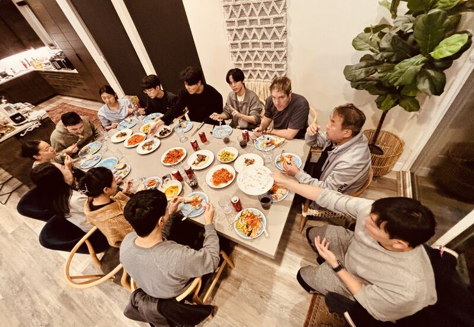
Desert Rose 2026 Workation Recap
Rabbit Ventures spent two weeks with portfolio companies in an isolated Southern Utah house, focused on founder-to-founder product feedback, onboarding, lead generation, marketing, fundraising, and peer learning.
Read moreDesert Rose 2026: Scene #1 — Deja Vu & Evolution
A Brunch article documented the second Desert Rose Workation, describing how Rabbit Ventures refined the program from the previous year and positioned it as a denser execution-focused gathering for portfolio founders.
Read moreChangbal Innovation Hack 2025 Judge
Rabbit Ventures was listed as a judge for Changbal Innovation Hack 2025, with the General Partner role represented in the published judge panel.
Read more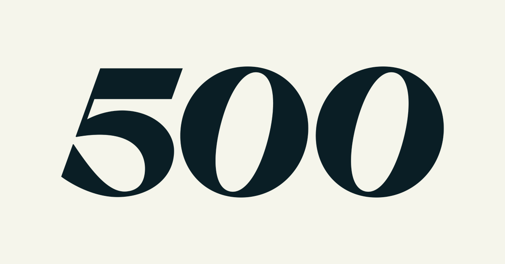
500 Korea Global Innovation Day
Rabbit Ventures attended 500 Korea Global Innovation Day, a flagship accelerator demo day and networking event showcasing AI and deep-tech startups from 500 Global's Korea portfolio.
Read more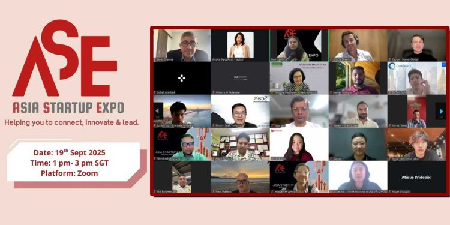
AsiaStartupExpo Q3 2025: Virtual Pitches Turn into Real Opportunities
KoreaTechDesk covered AsiaStartupExpo Q3 2025 and listed Rabbit Ventures among the global investor panel that evaluated startups and offered real-time feedback.
Read more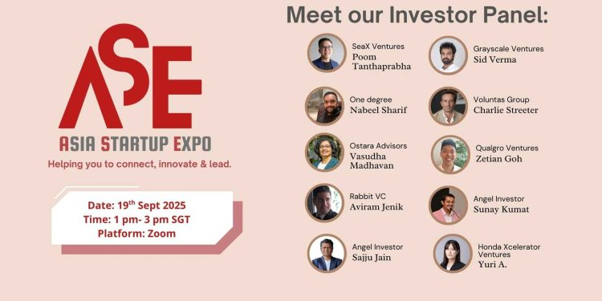
AsiaStartupExpo Q3 2025: Connecting Asian Startups with Global Investors
KoreaTechDesk announced AsiaStartupExpo Q3 2025 and named Rabbit Ventures as one of the investor judges for the virtual startup pitch forum.
Read more
Investor Judges for AsiaStartupExpo Q3 2025
AsiaTechDaily profiled the investor judges for AsiaStartupExpo Q3 2025, including Rabbit Ventures as a fund focused on mentoring and funding early-stage founders.
Read more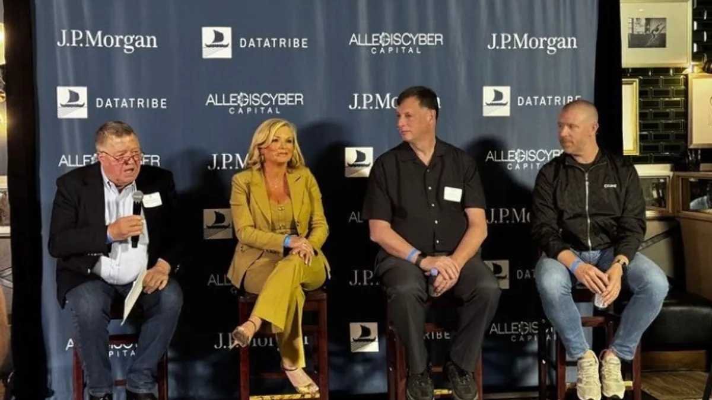
Cybersecurity CEO Reunion at Black Hat 2025
Rabbit Ventures attended the cybersecurity CEO reception co-hosted by AllegisCyber Capital, J.P. Morgan, and DataTribe during Black Hat USA 2025, joining 190+ cybersecurity industry leaders. The event was covered by Cybersecurity Dive and Nextgov.
Read more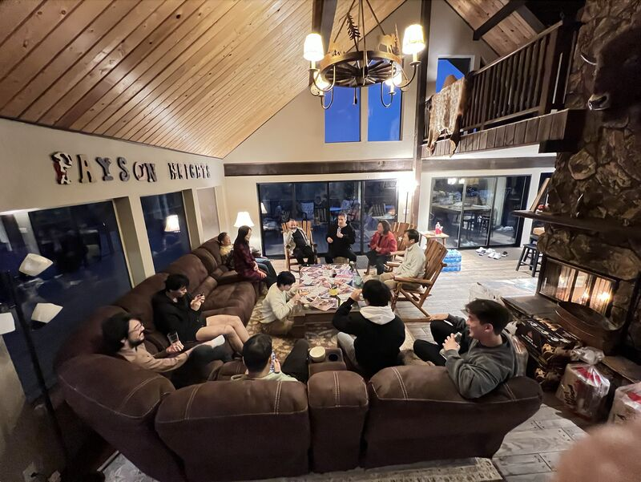
Desert Rose Workation Journal #1: Why Founders Went to the Desert
A Brunch article introduced Rabbit Ventures Desert Rose Workation, explaining the program's goal of helping founders focus on essential problems and vision in an isolated environment.
Read more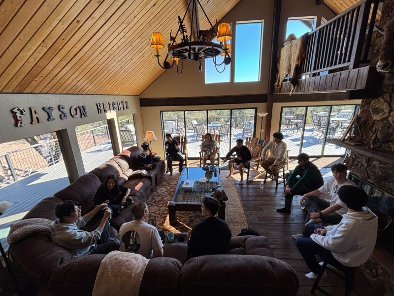
Rabbit VC Desert Rose Workation Day 7
Rabbit Ventures shared a day-seven update from the Desert Rose Workation, noting that the photos did not capture the five startup teams working almost nonstop on their laptops.
Read more
Desert Rose 2025 Workshop Reflection by PhyxUp Health
Rabbit Ventures reposted Sangwon Lim's reflection on the Desert Rose 2025 workshop, describing it as a two-week workation bringing together LPs, mentors, and founders for growth strategy, connections, and founder development.
Read more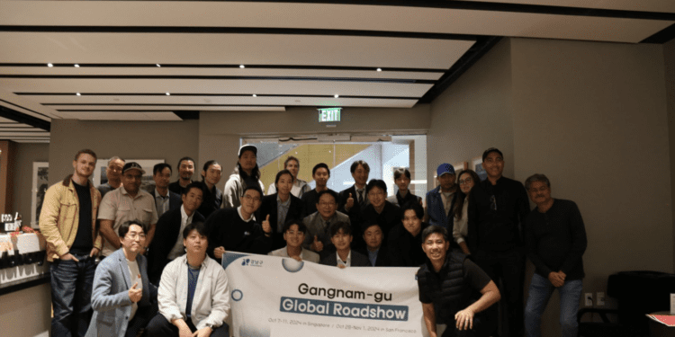
South Korea's Top Startups Impress Silicon Valley Investors at the 2024 Gangnam Global Roadshow
KoreaTechDesk covered the 2024 Gangnam Global Roadshow in Menlo Park and quoted Rabbit Ventures advising Korean startups to spend less time preparing and more time engaging directly with U.S. customers.
Read more
Korea Pavilion Networking Reception at TechCrunch Disrupt 2024
Rabbit Ventures attended the Korea Pavilion Networking Reception at TechCrunch Disrupt 2024 in San Francisco, hosted by KOTRA Silicon Valley, connecting with Korean startups and investors at SPIN SF.
Read moreX-Hub Tokyo-Singapore Demo Day
Rabbit Ventures was invited to the Collaborative Futures: X-Hub Tokyo-Singapore virtual Demo Day hosted by e27, showcasing top Japanese startups expanding into Singapore.
Read more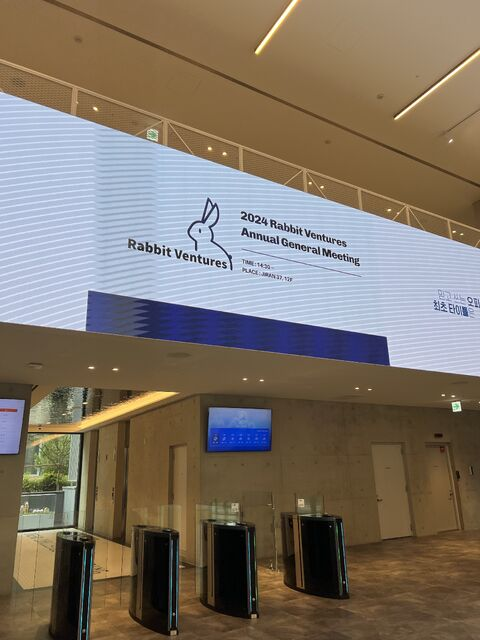
Rabbit Ventures 2024 Annual General Meeting
Rabbit Ventures held its first annual general meeting, marking a milestone for the fund with LPs and portfolio startups participating.
Read more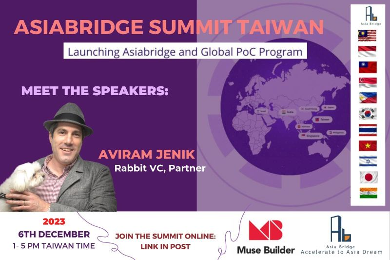
Asia Bridge Summit Taiwan Speaker Announcement
Rabbit Ventures was listed as a speaker for Asia Bridge Summit Taiwan in connection with the AsiaBridge and Global PoC Program.
Read more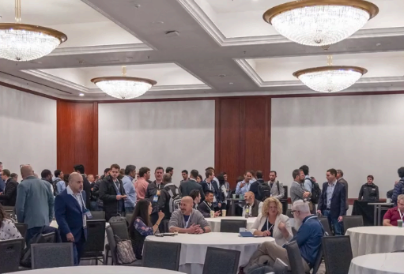
RSA Cyber Future Breakfast & Live Pitch, RSA 2023
Rabbit Ventures attended the RSA Cyber Future Breakfast & Live Pitch event hosted by Elron Ventures during RSA Conference 2023 in San Francisco, connecting with cybersecurity founders and investors.
Read more